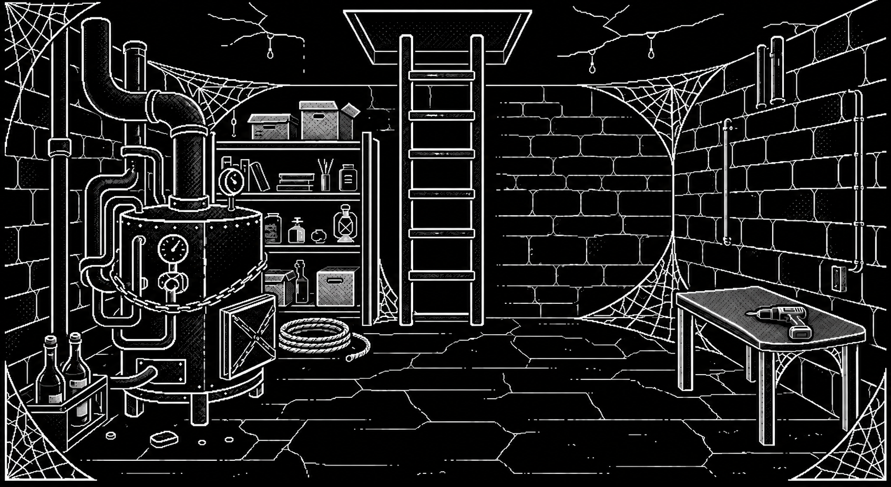

Subsolo
No subsolo há ferramentas e uma caldeira presa por correntes. O alicate ajuda a abrir a caldeira; dentro dela está um relatório.
Encontre também a chave de fenda. O parafuso do bueiro precisa ser girado três vezes para a esquerda.
Voltar ao quartoIr ao corredor